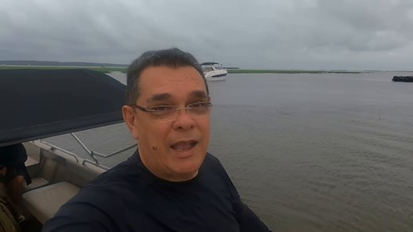

00:00:30.033
O apresentador aparece a bordo de uma lancha. Ao fundo, o Tapajós está encoberto por nuvens baixas.
Rio Tapajós, margem esquerda, Santarém (PA) · confirmado
Ele situa o passeio na margem esquerda do Tapajós e comenta as condições nubladas para a travessia.
Transcrição · 00:00:20 | 00:00:30 | 00:00:38
Turismo Aqui — quadro de vídeo publicado no YouTube